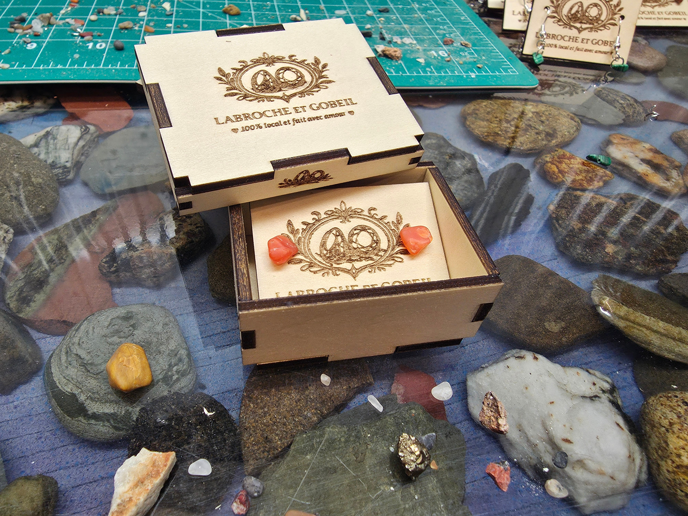

Créations artisanales · Canada 🍁
Bijoux en pierres
naturelles
faits à la main.
Chaque pièce est unique — façonnée à partir de vraies roches collectées, fracassées et polies par Nathan et Lyam. Boucles, colliers, bracelets : 100 % naturels.
Roches naturelles · Pièces uniques



Notre approche
Pourquoi choisir
Les Petits Bijoux ?

Fait main
Chaque bijou est fabriqué à la main, pièce par pièce, avec des matériaux soigneusement choisis.

Unique
Pas de production en série. Chaque création est différente — aucun bijou n'est identique à un autre.

Accessible
Des bijoux beaux et abordables, conçus pour être portés tous les jours avec style et fierté.
Prête à trouver ta pièce parfaite ?
Explorer la boutique